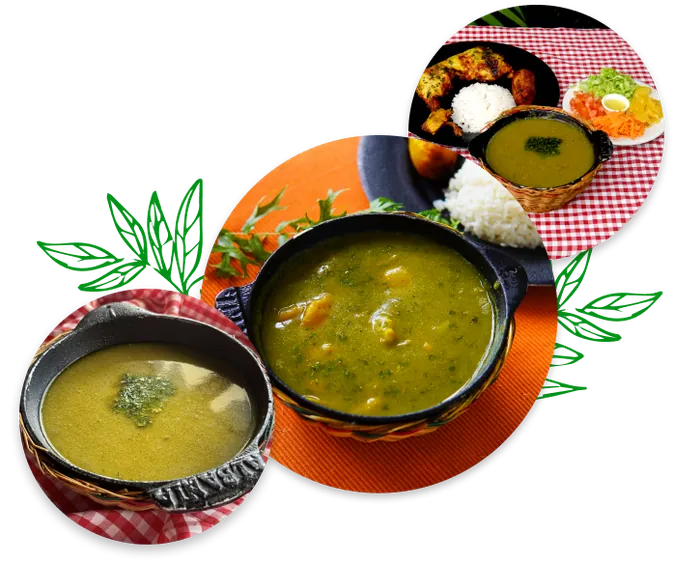
Sancocho de gallina
El alma de todas las reuniones familiares: el rey de la casa, cocinado a fuego lento en leña con ingredientes típicos de la región.
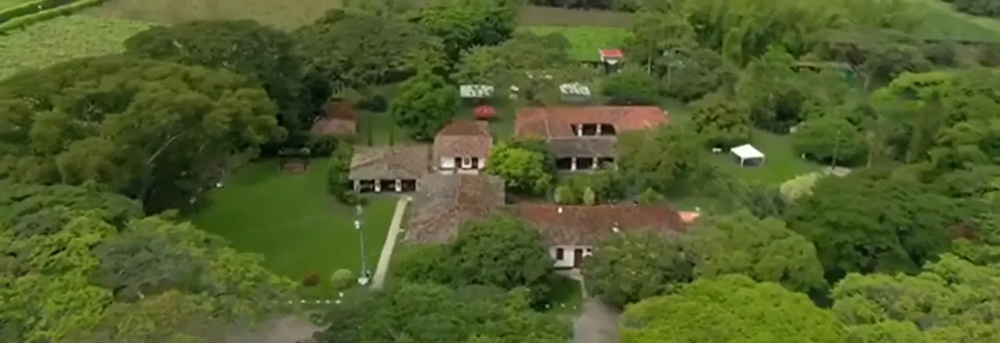
Más de 33 años de cocina vallecaucana, a fuego de leña, en dos casas campestres del Valle del Cauca.
Dos sedes, un mismo sabor
Más que un restaurante, un respiro en la naturaleza. Elige la casa que mejor acompañe tu plan.
Nuestra sede en Ginebra es un tributo a la tradición y a la unión familiar. Aquí el tiempo se detiene entre risas y aromas ancestrales; su zona de juegos fue creada para que tus pequeños disfruten mientras tú te relajas en medio de la naturaleza, la sazón y la historia valluna.
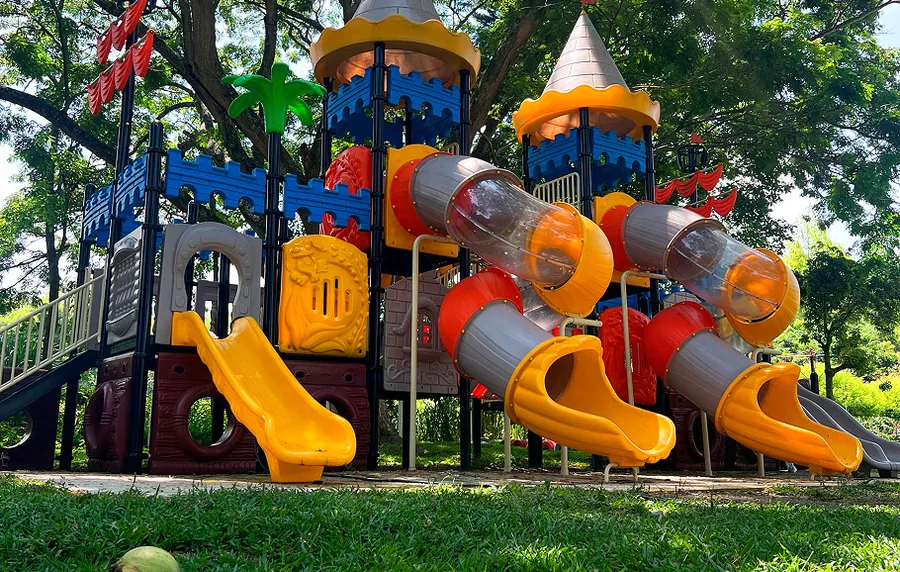
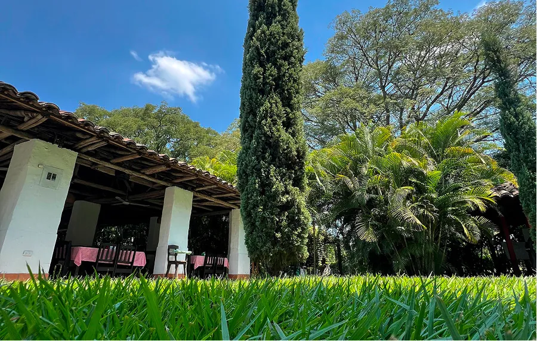
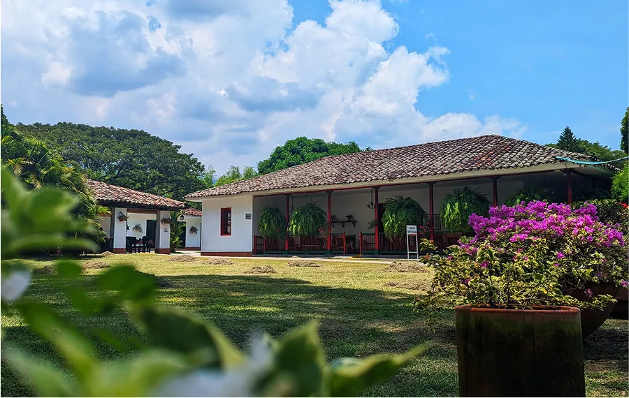
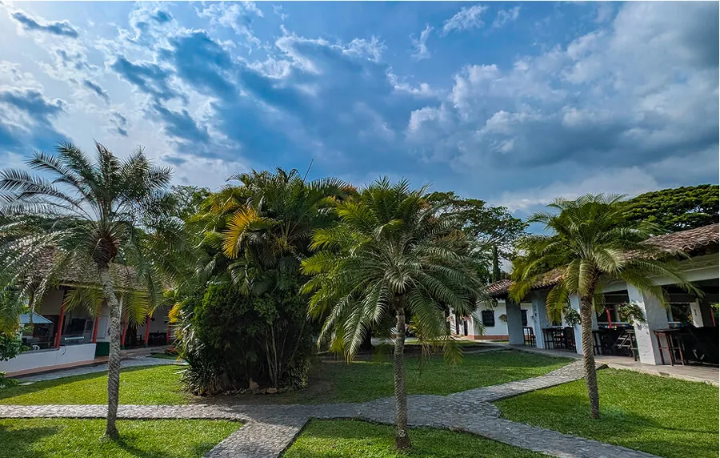
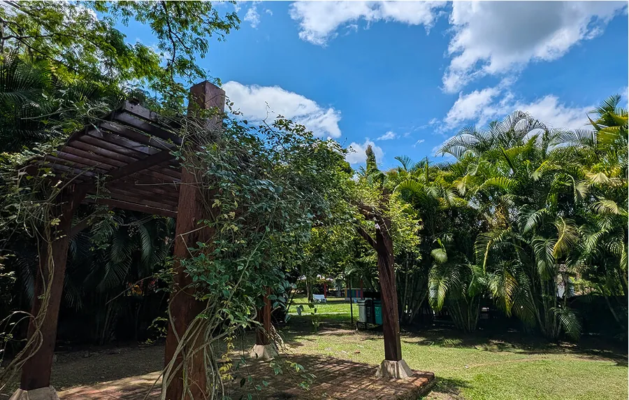
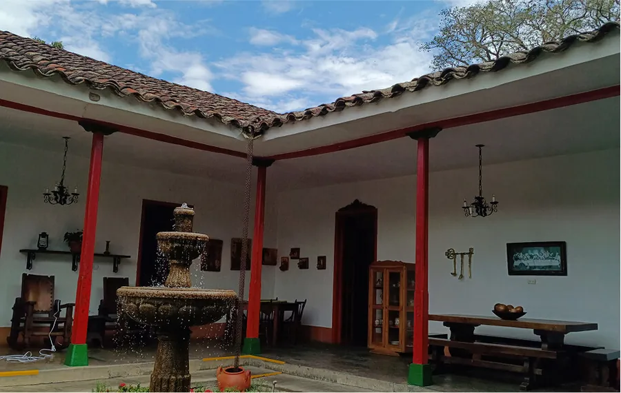
Esta sede es un refugio detenido en el tiempo, un rincón secreto donde la tradición se funde con la serenidad. Fue creada para quienes buscan exclusividad, donde cada evento se convierte en un encuentro íntimo con la naturaleza. Si buscas desconectar, este lugar es ideal.
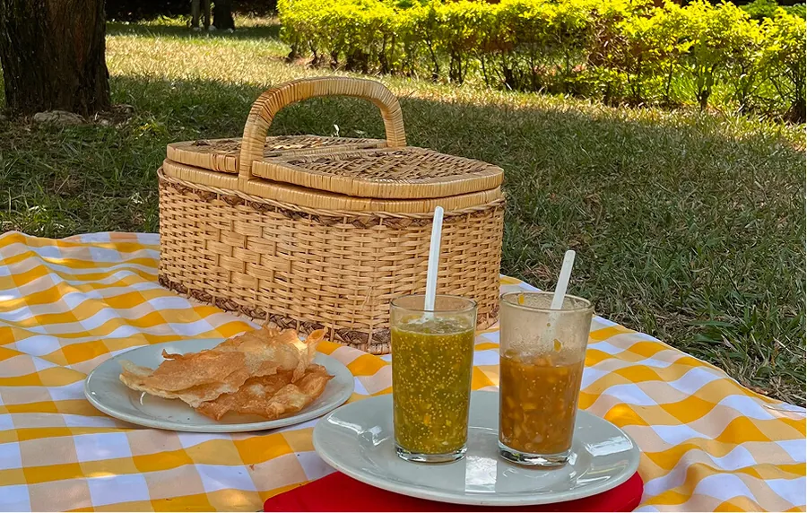
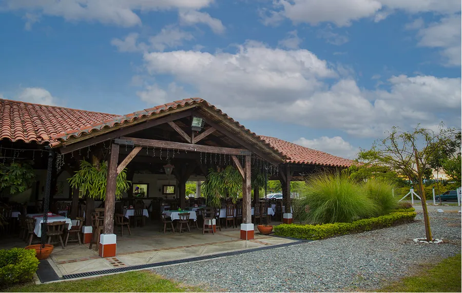
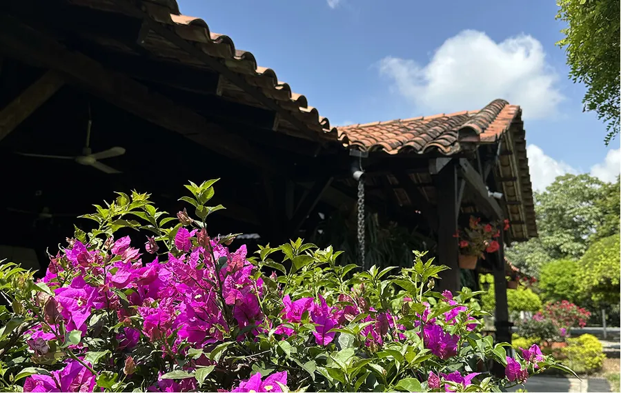
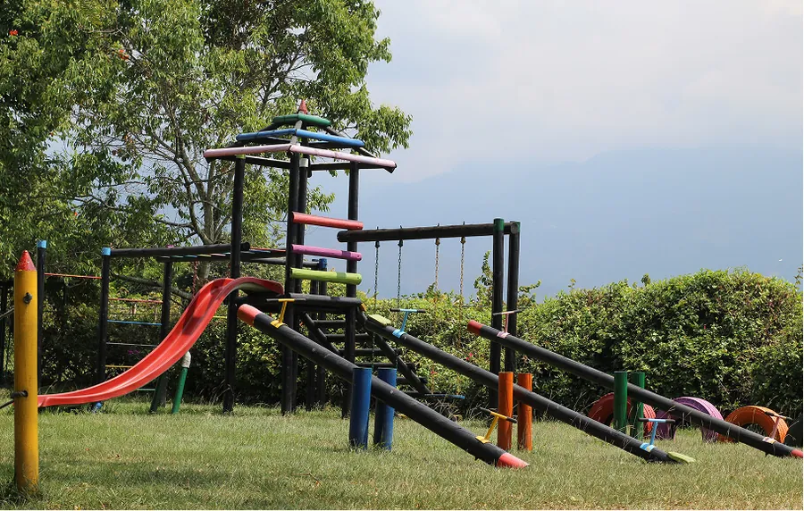
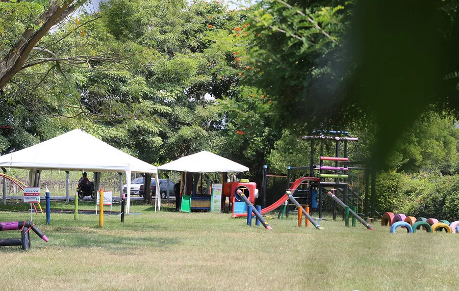
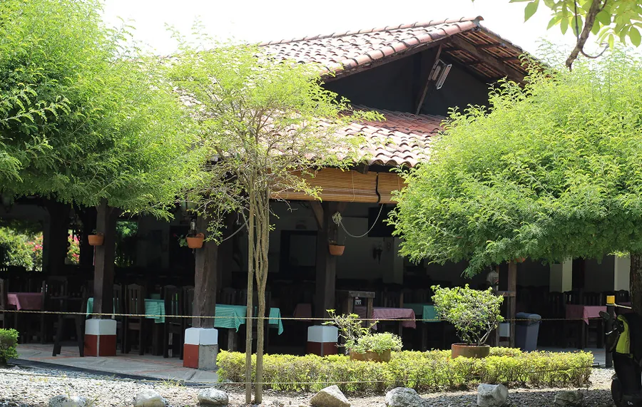
La carta

El alma de todas las reuniones familiares: el rey de la casa, cocinado a fuego lento en leña con ingredientes típicos de la región.
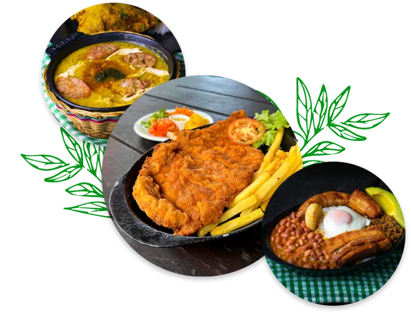
Un viaje a la infancia en cada bocado. Texturas pensadas para conectarte con tus raíces y con la esencia de nuestros antepasados.
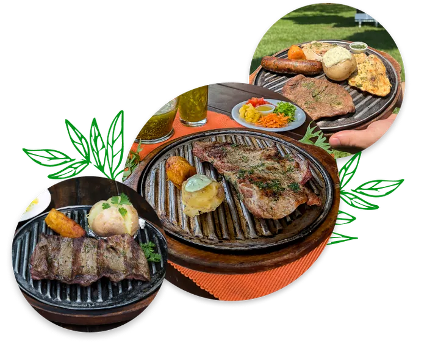
Cortes seleccionados, asados al punto perfecto y acompañados de sabores autóctonos con lo mejor de la tradición valluna.
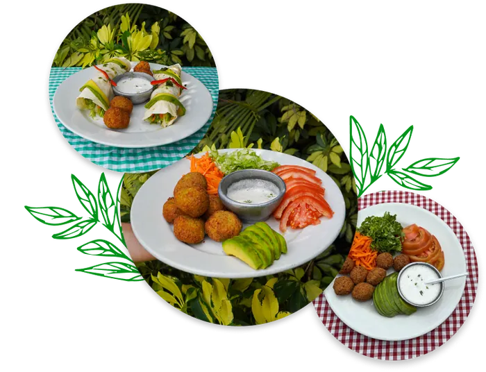
Ingredientes 100 % naturales y en su mayoría cultivados aquí: una alternativa fresca sin perder la esencia de la cocina vallecaucana.
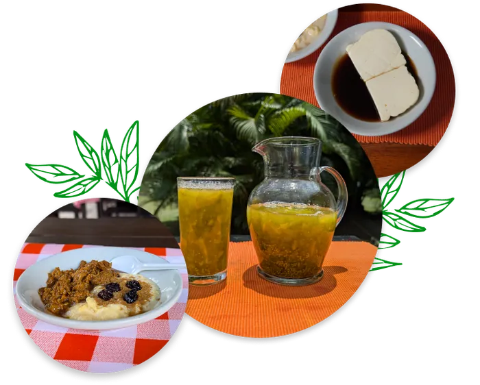
Champús bien frío, lulada tradicional, combinado de natas y cortado, melado con queso. El dulzor perfecto para cerrar la mesa.
Para toda la familia
Un espacio pensado para que los niños corran, exploren y se diviertan mientras los adultos disfrutan de un respiro en la naturaleza. Y como los mejores momentos se disfrutan con la familia completa, tus peluditos también son bienvenidos.
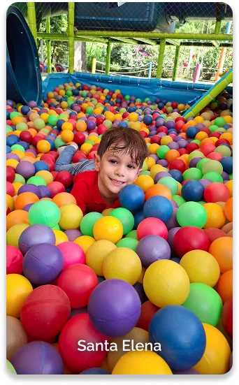
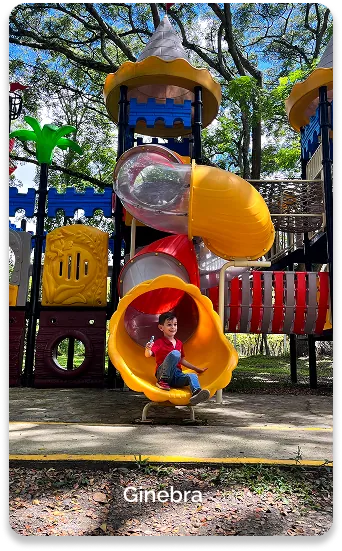
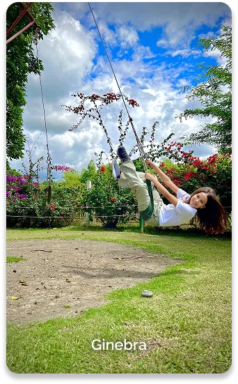
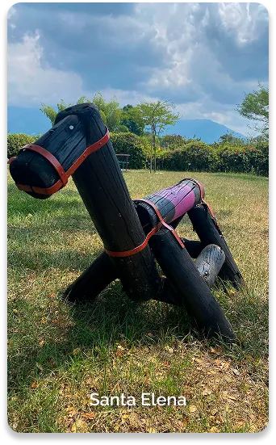
Eventos
Acompaña tus celebraciones en grande combinando los mejores ingredientes: gastronomía tradicional y aire libre, que se fusionan creando recuerdos irreemplazables para ti y tus invitados. Desde bodas y primeras comuniones hasta grados y eventos empresariales, tenemos espacio para más de 600 personas.
Conoce más sobre eventos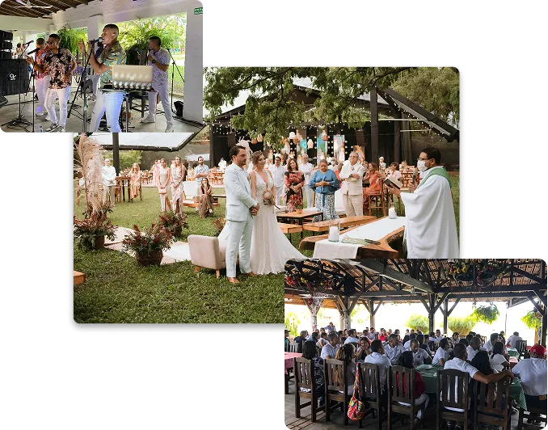
Recuerdos
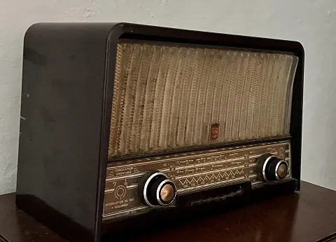
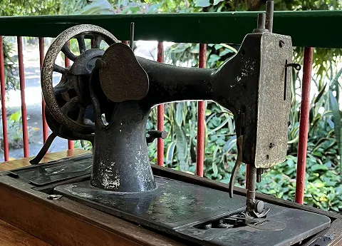
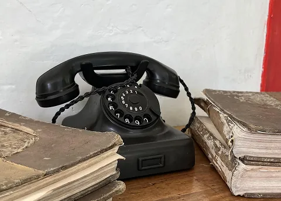
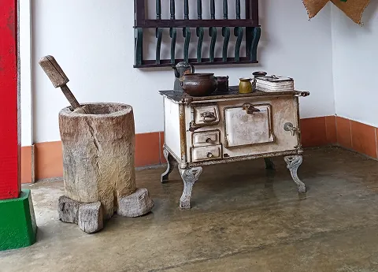
Te esperamos en Ginebra y en Santa Elena. Reserva tu mesa en menos de un minuto por WhatsApp.